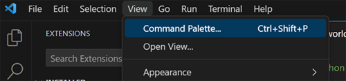

Beyond .NET
Endpoint's hardware and documentation's main focus is .NET, however the system is capable of supporting other languages as well.
Python
Getting Started
Install the latest version VS Code, https://code.visualstudio.com/
Visit the extension section from within VS Code and search for and install Endpoint VSC Python Debugger. Alternatively, Download and install the latest Endpoint VSC Python Extension (.vsix) file manually.
Navigate to View -> Command Palette

Search for Endpoint and select Endpoint:Create Python project

Give the project a name and location.
Tip
If you change the default project name you must also change it in the settings.json file
Python Libraries
Endpoint uses the standard Python libraries when available. When a library doesn't existing inside the Python API relating to embedded hardware we use an Endpoint library to fill in the missing gaps. Additional libraries are under development.
| Peripheral | Endpoint Python Library |
| GPIO | GHIElectronics.Endpoint.Core.EPM815.Gpio |
| PWM | GHIElectronics.Endpoint.Core.EPM815.PWM |
| SPI | GHIElectronics.Endpoint.Core.EPM815.Spi |
| I2C | GHIElectronics.Endpoint.Core.EPM815.Adc |
| ADC | GHIElectronics.Endpoint.Core.EPM815.Adc |
| DISPLAY | GHIElectronics.Endpoint.Core.EPM815.Display |
| RTC | GHIElectronics.Endpoint.Core.EPM815.RTC |
| Register | GHIElectronics.Endpoint.Core.EPM815.Register |
| Serial Port | GHIElectronics.Endpoint.Core.EPM815.SerialPort |
The Python libraries are built into the release image, user don't need to do anything else, just use import.
This uses remote debug, so there is no IntelliSense built in. Optionally users can install on the PC to use IntelliSense when importing the libraries.
C:\pip install GHIElectronics.Endpoint.Core
After install, VSC code IntelliSense will show the libraries available.
Python Code Samples
Here is a couple code samples to get started.
Additional code samples can be found in the Endpoint Samples Repo
Python GPIO
The code sample below blinks an on-board LED.
import gpiod
import time
import GHIElectronics.Endpoint.Core.EPM815.Gpio as Gpio
pin = Gpio.Pin.PC0
chip=gpiod.Chip(str(int(pin / 16)))
line = chip.get_line(pin % 16)
line.request(consumer='test', type=gpiod.LINE_REQ_DIR_OUT)
while True:
line.set_value(1)
time.sleep(0.5)
line.set_value(0)
time.sleep(0.5)
Python PWM
The code sample demonstrates PWM using an on-board buzzer.
import time
import GHIElectronics.Endpoint.Core.EPM815.G as Pwm
pwm = Pwm.PwmController(Pwm.Pin.PF9)
pwm.Frequency = 1000
pwm.DutyCycle = 0.5
pwm.Start()
time.sleep(3)
pwm.Stop()